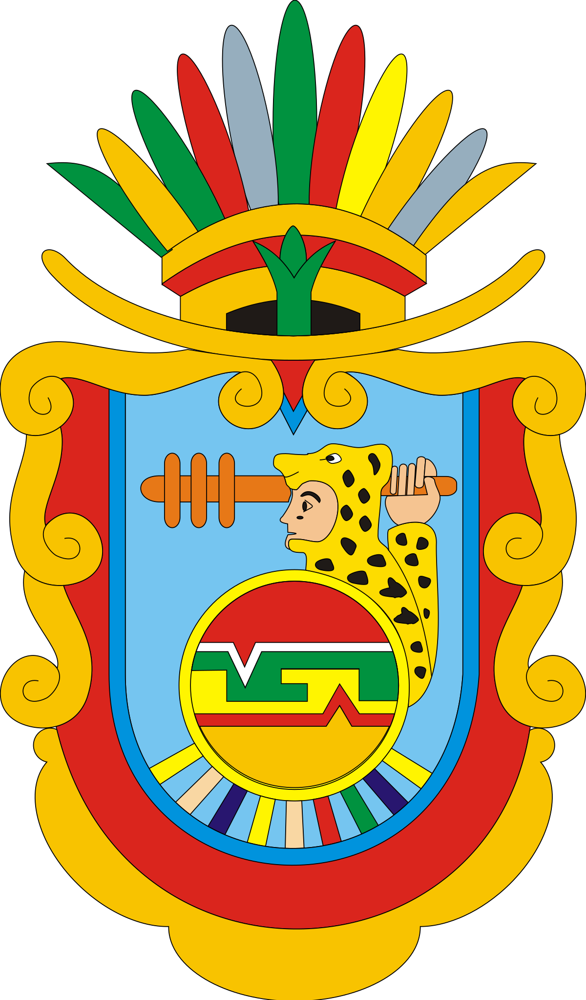
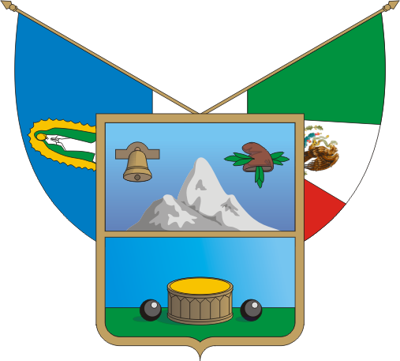
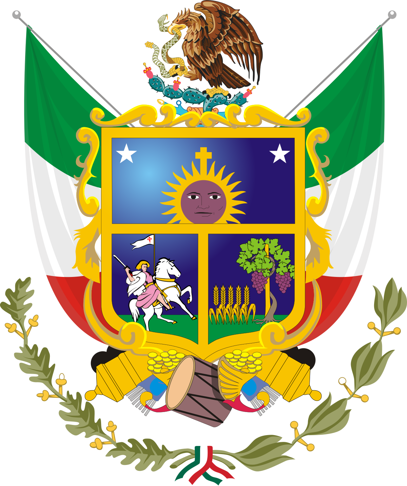
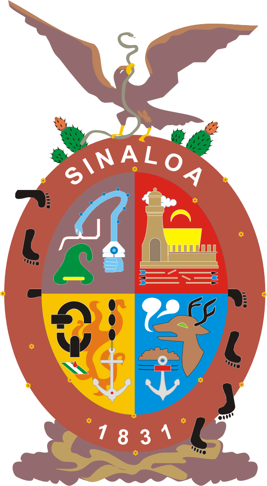

| Estado | Descripcion | Escudo |
|---|---|---|
| Aguascalientes | Aguascalientes, oficialmente Estado Libre y Soberano
de Aguascalientes, es uno de los treinta y un estados que, junto con la Ciudad de México, conforman México; se ubica en la región centronorte de México y parte del Bajío mexicano.Su capital y ciudad más poblada es Aguascalientes. |
 |
| Baja California | Baja California, oficialmente Estado Libre y Soberano
de Baja California, es uno de los treinta y un estados que, junto con la Ciudad de México, conforman México.Su capital es Mexicali y su ciudad más poblada es Tijuana, cabecera del municipio homónimo, el más poblado del país. |
 |
| Baja California Sur |  |
|
| Campeche | ||
| Chiapas | ||
| Chihuahua |  |
|
| Ciudad de México |  |
|
| Coahuila de Zaragoza | ||
| Colima | ||
| Durango | ||
| Guanajuato |  |
|
| Guerrero |  | |
| Hidalgo |  | |
| Jalisco |  |
|
| Estado de México |  |
|
| Michoacán de Ocampo |  |
|
| Morelos |  |
|
| Nayarit |  |
|
| Nuevo León |  |
|
| Oaxaca |  |
|
| Puebla |  |
|
| Querétaro |  | |
| Quintana Roo |  |
|
 |
||
| San Luis Potosí |  | |
| Sinaloa |  |
|
| Sonora | ||
| Tabasco |  |
|
| Tamaulipas |  |
|
| Tlaxcala |  |
|
| Veracruz de Ignacio de la Llave | ||
| Yucatán | ||
| Zacatecas |